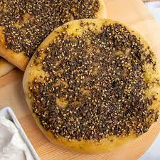

Zaatar Manakish Recipe

Mediterranean flatbread that is made with a simple dough recipe and topped with an olive-oil based zaatar spread.
Ingredients
- Flour
- Sugar
- Salt
- Yeast
- Water
- Olive Oil
- Zaatar
- Baking Powder
Steps
- Add all ingredients together and mix well to form a slighty sticky dough.
- Add oil to dough and knead until smooth.
- Cover the dough and let it rest for at least an hour.
- After an hour, take out dough and roll it into small circular pieces.
- Add a mixture of zaatar adn olive oil apply it to the dough.
- Preheat the oven.
- Put dough in oven and let it bake at 180 degress celcius for 15 min.
- Take out the manakish. Let it cool.
Go back